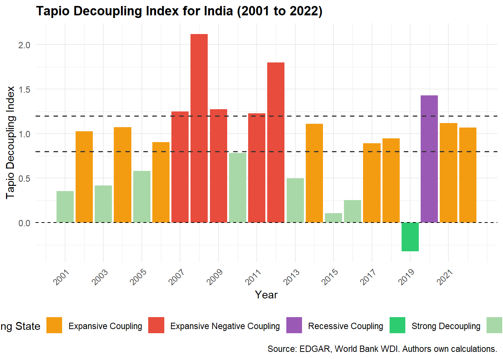
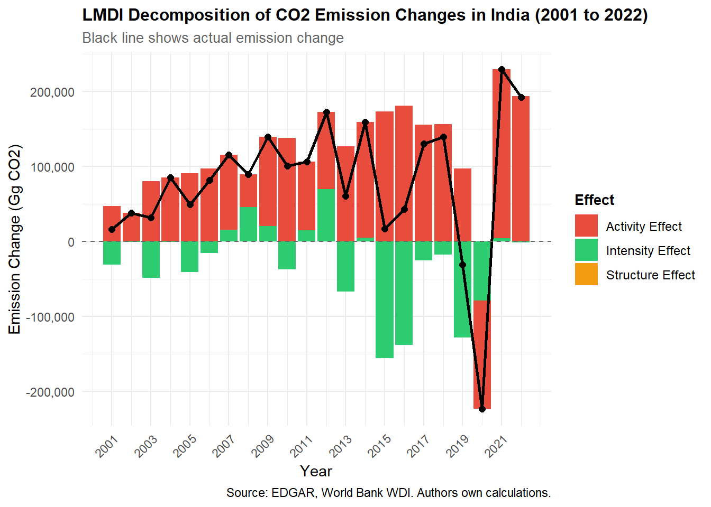
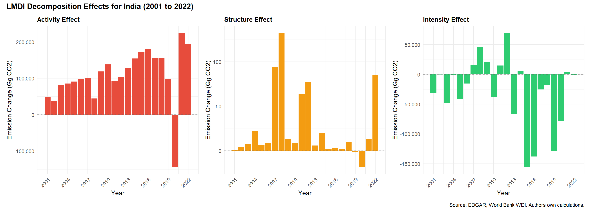

| Year | Tapio Index | Decoupling State |
|---|---|---|
| 2001 | 0.353 | Weak Decoupling |
| 2002 | 1.027 | Expansive Coupling |
| 2003 | 0.417 | Weak Decoupling |
| 2004 | 1.071 | Expansive Coupling |
| 2005 | 0.580 | Weak Decoupling |
| 2006 | 0.902 | Expansive Coupling |
| 2007 | 1.250 | Expansive Negative Coupling |
| 2008 | 2.120 | Expansive Negative Coupling |
| 2009 | 1.272 | Expansive Negative Coupling |
| 2010 | 0.782 | Weak Decoupling |
| 2011 | 1.228 | Expansive Negative Coupling |
| 2012 | 1.801 | Expansive Negative Coupling |
| 2013 | 0.498 | Weak Decoupling |
| 2014 | 1.111 | Expansive Coupling |
| 2015 | 0.104 | Weak Decoupling |
| 2016 | 0.251 | Weak Decoupling |
| 2017 | 0.890 | Expansive Coupling |
| 2018 | 0.944 | Expansive Coupling |
| 2019 | -0.324 | Strong Decoupling |
| 2020 | 1.431 | Recessive Coupling |
| 2021 | 1.121 | Expansive Coupling |
| 2022 | 1.067 | Expansive Coupling |
Decoupling or Illusion? Analysing Emission Intensity, Economic Growth, and Sectoral Energy Transitions in India (2000–2022)
1 Introduction
Economic growth and carbon emissions have historically moved together. As countries industrialise, they consume more energy, burn more fossil fuels, and emit more greenhouse gases. The central challenge of sustainable development is breaking this relationship, growing economically while reducing or stabilising emissions.
India presents a particularly compelling case for this analysis. As the world’s fifth largest economy and third largest emitter of CO2 during the study period, India’s development trajectory carries significant implications for global climate outcomes. India has committed under its Nationally Determined Contributions (NDCs) to reduce the emissions intensity of its GDP by 45% by 2030 relative to 2005 levels, an ambitious target that assumes a fundamental decoupling of economic activity from carbon output.
Yet the nature of this decoupling remains contested. India’s economy underwent a structural shift toward services during 2000 to 2022, a sector significantly less energy intensive than manufacturing or agriculture. This raises a critical question: is the observed reduction in emission intensity a genuine result of cleaner energy and greater efficiency, or is it a statistical artifact of economic restructuring?
This study investigates this question rigorously using three complementary analytical frameworks. First, the Tapio decoupling index is applied to classify the year by year relationship between GDP growth and CO2 emissions from 2000 to 2022. Second, the Log Mean Divisia Index (LMDI) decomposition method is used to isolate the specific drivers of emission changes, separating the effects of economic activity, sectoral structure, energy intensity, and energy mix. Third, the Environmental Kuznets Curve (EKC) hypothesis is tested to assess whether India follows the theoretical inverted U relationship between income and emissions, and to estimate whether a peak emissions point is approaching.
Together these analyses provide a comprehensive and evidence based assessment of whether India’s growth was genuinely decoupling from its carbon footprint during the study period, or whether the appearance of progress masks deeper structural challenges.
2 Literature Review
2.1 The Decoupling Debate in Developing Economies
The relationship between economic growth and carbon emissions has been studied extensively across both developed and developing economies. The foundational concern is straightforward: if emissions grow proportionally with GDP, then economic development and climate targets become structurally incompatible. The concept of decoupling, where emissions grow slower than or independently of GDP, has therefore become central to sustainability research.
Early decoupling studies relied on the OECD decoupling factor, a simple ratio of emission growth to GDP growth. However, this measure proved highly sensitive to the choice of base and end years, producing inconsistent results across studies. Tapio (2005) addressed this limitation by introducing an elasticity-based decoupling index that classifies the GDP-emissions relationship into eight distinct states, offering a more stable and nuanced year by year assessment. This framework has since become widely adopted in the literature.
2.2 Existing Studies on India
Several studies have applied decoupling and decomposition frameworks to India, though with important limitations that this study addresses. A comparative analysis of India, Brazil and China for the period 2000 to 2018 using the Tapio model found that India’s decoupling status showed continuous fluctuations, in contrast to China which moved toward strong decoupling after 2012. India predominantly experienced weak decoupling and expansive coupling during this period, suggesting that emissions continued to grow alongside the economy rather than separating from it.
Studies applying the LMDI decomposition method to India have largely focused on specific sectors rather than the economy as a whole. Research on India’s transportation sector from 2001 to 2020 found that economic advancement and population scale were the primary drivers of rising CO2 emissions, while energy efficiency improvements partially offset these increases. Similarly, studies on India’s manufacturing sector have used combined Tapio and LMDI approaches but remain limited to organised manufacturing and do not account for the broader structural shift of India’s economy toward services during this period.
On the EKC hypothesis, empirical evidence for India is mixed. A study covering 1991 to 2018 confirmed the existence of an inverted U-shaped EKC relationship for India, but found that CO2 levels continued rising past the theoretical turnaround point, suggesting that the income threshold alone does not determine emission trajectories. Research by Sinha and Shahbaz (2018) similarly found evidence of an inverted U-shaped EKC for India with a turnaround point at approximately USD 2,937 per capita, while also demonstrating that renewable energy generation played a significant role in moderating emissions.
2.3 The Gap This Study Fills
Despite this body of work, three important gaps remain. First, most existing studies for India either end before 2020 or do not extend to 2022, missing the post-pandemic recovery period which saw significant shifts in both GDP growth and energy demand. Second, no study to our knowledge applies all three frameworks, Tapio decoupling, LMDI decomposition, and EKC regression, together in an integrated analysis for India’s economy as a whole over the 2000 to 2022 period. Third, the role of economic structural change, specifically the expansion of the services sector, as a confounding factor in India’s apparent emission intensity improvements has not been rigorously isolated using decomposition methods at the national level.
This study addresses all three gaps by applying a unified analytical framework to the full 2000 to 2022 period, using the most recent available data from EDGAR, the World Bank, and the Central Electricity Authority of India.
3 Methodology
3.1 The Tapio Decoupling Index
The Tapio decoupling index, introduced by Tapio (2005), measures the elasticity of CO2 emissions with respect to GDP growth on a year by year basis. Unlike earlier OECD decoupling measures, the Tapio index is not sensitive to the choice of base year, making it more robust for longitudinal analysis. The index is calculated as follows:
\[e = \frac{\%\Delta CO_2}{\%\Delta GDP} = \frac{(CO_{2,t} - CO_{2,t-1})/CO_{2,t-1}}{(GDP_t - GDP_{t-1})/GDP_{t-1}}\]
Where \(e\) is the Tapio decoupling index, \(CO_{2,t}\) is total CO2 emissions in year \(t\), and \(GDP_t\) is real GDP in year \(t\). Based on the value of \(e\), each year is classified into one of eight decoupling states. The three most relevant states for this study are strong decoupling (\(e < 0\), GDP growing), weak decoupling (\(0 < e < 0.8\), GDP growing), and expansive negative coupling (\(e > 1.2\), GDP growing), representing the best, moderate, and worst case scenarios respectively for India’s emissions trajectory.
Data Processing:
The Tapio index is calculated using India’s total national CO2 emissions from the EDGAR TOTALS BY COUNTRY dataset and real GDP in constant 2015 USD from the World Bank World Development Indicators. Both series were filtered to the study period 2000 to 2022 and merged into a unified panel dataset. Year on year percentage changes were computed for both variables, with 2000 serving as the base year. The index was calculated for each year from 2001 to 2022, producing 22 annual observations. Each observation was then classified into one of Tapio’s eight decoupling states based on the threshold values defined in the original framework.
3.2 LMDI Decomposition
The Log Mean Divisia Index (LMDI) decomposition method, developed by Ang (2004), is used to identify the specific drivers of changes in India’s CO2 emissions over the study period. LMDI is preferred over earlier decomposition methods because it produces an exact decomposition with no unexplained residual term.
Total CO2 emissions are expressed as the product of four factors across sectors:
\[C = \sum_{i} GDP \times \frac{GDP_i}{GDP} \times \frac{E_i}{GDP_i} \times \frac{C_i}{E_i}\]
Where \(GDP\) is total real output, \(GDP_i/GDP\) is the share of sector \(i\) in total output representing the structure effect, \(E_i/GDP_i\) is energy intensity of sector \(i\) representing the intensity effect, and \(C_i/E_i\) is the emission factor of sector \(i\) representing the emission factor effect.
While the full LMDI framework decomposes emission changes into four effects, namely the activity effect, structure effect, energy intensity effect, and emission factor effect, this study combines the final two into a single composite intensity effect. This approach is adopted due to the unavailability of consistent sectoral energy consumption data for India at the required granularity across the full study period. The combined intensity effect captures both changes in energy use per unit of output and changes in the carbon content of energy, and is a well established approach in the LMDI literature when sectoral energy data are unavailable. The decomposition identity used in this study is therefore:
\[\Delta C = \Delta C_{activity} + \Delta C_{structure} + \Delta C_{intensity}\]
Where \(\Delta C_{intensity}\) represents the combined effect of energy intensity and emission factor changes across sectors.
Each component is calculated using the LMDI additive formula:
\[\Delta V = \sum_{i} L(V_{i}^{T}, V_{i}^{0}) \ln \left(\frac{x_{i,k}^{T}}{x_{i,k}^{0}}\right)\]
Where \(L(V_{i}^{T}, V_{i}^{0})\) is the logarithmic mean of emissions in the base and target years, defined as:
\[L(A, B) = \frac{A - B}{\ln A - \ln B}\]
Data Processing:
The EDGAR IPCC 2006 dataset provides CO2 emissions for India across 22 individual source categories for each year of the study period. To align with the sectoral structure required for LMDI decomposition and to ensure interpretability of results, these 22 categories were aggregated into seven broader sector groups as follows:
- Power — Main Activity Electricity and Heat Production
- Industry — Manufacturing Industries and Construction, Petroleum Refining, Cement Production, Lime Production, Glass Production, Other Process Uses of Carbonates, Chemical Industry, Metal Industry
- Transport — Civil Aviation, Road Transportation, Railways, Water-borne Navigation, Other Transportation
- Residential — Residential and Other Sectors
- Fugitive — Solid Fuels, Oil and Natural Gas, Fossil Fuel Fires
- Agriculture — Liming, Urea Application
- Other — Non-Specified, Non-Energy Products from Fuels and Solvent Use
This grouping follows standard practice in sectoral emission analysis and ensures that each group represents a meaningful and distinct economic activity. The aggregation was validated by confirming that the sum of all sector group emissions matched the EDGAR country total for every year in the study period, with residual differences attributable only to floating point precision and not to data loss.
For each sector group and year, two derived variables were calculated. First, the sector share, defined as each sector’s emissions as a proportion of total national emissions, capturing the structural composition of India’s emission profile. Second, the emission intensity, defined as each sector’s emissions per unit of real GDP, capturing the combined effect of energy efficiency and energy mix within each sector.
The three LMDI effects were then calculated year by year using the log mean weighting formula, with each effect summed across all seven sector groups to produce national level decomposition results.
3.3 The Environmental Kuznets Curve
The Environmental Kuznets Curve (EKC) hypothesis proposes that the relationship between per capita income and environmental degradation follows an inverted U shape. As income rises from low levels, emissions initially increase due to industrialisation. Beyond a certain income threshold, structural change toward services, greater demand for environmental quality, and access to cleaner technologies cause emissions to decline.
To test the EKC hypothesis for India over the period 2000 to 2022, the following quadratic regression model is estimated:
\[CO_{2,t} = \alpha + \beta_1 Y_t + \beta_2 Y_t^2 + \beta_3 X_t + \varepsilon_t\]
Where \(CO_{2,t}\) is per capita CO2 emissions in year \(t\), \(Y_t\) is real GDP per capita, \(Y_t^2\) is the squared term of GDP per capita, and \(X_t\) represents a vector of control variables including energy intensity and renewable energy share. The EKC hypothesis is confirmed if \(\beta_1 > 0\) and \(\beta_2 < 0\), both statistically significant. The income turning point is then estimated as:
\[Y^* = -\frac{\beta_1}{2\beta_2}\]
3.4 Data Sources
All data used in this study are drawn from publicly available institutional sources. CO2 and GHG emission data are obtained from the EDGAR (Emissions Database for Global Atmospheric Research) database maintained by the European Commission Joint Research Centre. GDP and GDP per capita data in constant 2015 USD are sourced from the World Bank World Development Indicators. Energy consumption data by fuel type are obtained from Our World in Data, which compiles and harmonises energy statistics from the BP Statistical Review of World Energy. State level electricity generation data are obtained from the Central Electricity Authority of India and are used in the spatial analysis component of this study.
Throughout this study, emissions are reported in Gigagrams of CO2 (Gg CO2), the native unit used by the EDGAR database. One Gigagram is equivalent to one thousand metric tonnes, or one million kilograms. For reference, India’s total CO2 emissions in 2022 were approximately 2,741,000 Gg CO2, equivalent to 2.74 billion metric tonnes. This unit is retained throughout to avoid conversion errors and ensure reproducibility against the source data.
The study period covers 2000 to 2022, representing the most complete and consistent data available across all sources at the time of writing.
4 Results and Discussion
4.1 Tapio Decoupling Analysis
4.1.1 Results
The analysis covers the period 2001 to 2022, with 2000 serving as the base year for calculating year on year percentage changes and therefore excluded from the results.

Figure 1 presents the year by year Tapio decoupling index values and their corresponding classification for India over the study period 2001 to 2022. The results reveal a highly inconsistent decoupling trajectory, with India oscillating between weak decoupling and expansive negative coupling across the two decades studied.
During the early study period from 2001 to 2006, India predominantly exhibited weak decoupling, suggesting that GDP growth was outpacing emission growth during this phase. However, the period from 2007 to 2012 saw a marked deterioration, with four of six years classified as expansive negative coupling, indicating that emissions were growing faster than the economy. This coincides with India’s rapid industrialisation and significant expansion of coal based power generation during this period.
A partial recovery toward weak decoupling was observed between 2013 and 2016, potentially reflecting early investments in renewable energy capacity and improvements in energy efficiency. The single instance of strong decoupling occurred in 2019, the only year in the entire study period where CO2 emissions declined while GDP continued to grow. This finding warrants closer examination in the LMDI decomposition analysis to identify its underlying drivers.
The year 2020 recorded recessive coupling, where both GDP and emissions fell simultaneously as a consequence of the COVID-19 pandemic induced economic contraction. This does not represent genuine environmental progress and must be interpreted with caution. The post pandemic recovery in 2021 and 2022 returned India to expansive coupling, suggesting that emission reductions observed during the pandemic were temporary rather than structural.
4.1.2 Discussion
The Tapio decoupling analysis reveals that India has not achieved sustained decoupling of CO2 emissions from GDP growth over the 2001 to 2022 period. While episodes of weak decoupling were observed, particularly in the early 2000s and mid 2010s, these were not maintained consistently, and the overall trajectory suggests that economic growth in India has continued to drive emission increases across most of the study period.
The deterioration toward expansive negative coupling between 2007 and 2012 is particularly significant. This period coincided with India’s rapid expansion of coal based power generation to meet rising electricity demand from industrialisation and urban growth. The findings suggest that energy supply decisions during this decade had a lasting impact on India’s emission trajectory that subsequent efficiency improvements have only partially offset.
The single instance of strong decoupling in 2019 is a noteworthy finding. While it represents the only year in the study period where emissions fell alongside positive GDP growth, it should be interpreted cautiously. A single year of strong decoupling does not constitute a structural shift, and the subsequent return to expansive coupling in 2021 and 2022 confirms that this was not the beginning of a sustained transition. The LMDI decomposition analysis in the following section will investigate the specific drivers behind this observation.
The 2020 recessive coupling result, driven by the COVID-19 pandemic, highlights an important methodological consideration. Emission reductions caused by economic contraction are fundamentally different from those achieved through structural change or technological transition. Including 2020 in trend analysis without this caveat would risk overstating India’s decoupling progress.
Overall the Tapio results raise significant questions about whether India’s declining emission intensity, as reported in its NDC progress assessments, reflects genuine structural decoupling or is partly attributable to the compositional shift of the economy toward less energy intensive services. This question is addressed directly in the LMDI decomposition that follows.
4.2 LMDI Decomposition Analysis
4.2.1 Results
The LMDI decomposition separates the total change in India’s CO2 emissions each year into three contributing effects: the activity effect, reflecting changes driven by overall GDP growth; the structure effect, capturing shifts in the sectoral composition of the economy; and the intensity effect, representing changes in emission intensity across sectors. The year 2000 serves as the base year and is excluded from the decomposition results.
| Year | Activity Effect (Gg CO2) | Structure Effect (Gg CO2) | Intensity Effect (Gg CO2) | Actual Change (Gg CO2) |
|---|---|---|---|---|
| 2001 | 47,284 | 1 | -31,132 | 16,152 |
| 2002 | 38,477 | 4 | -402 | 38,075 |
| 2003 | 80,623 | 8 | -48,718 | 31,905 |
| 2004 | 85,662 | 22 | -630 | 85,031 |
| 2005 | 90,842 | 7 | -41,125 | 49,717 |
| 2006 | 97,438 | 9 | -15,577 | 81,861 |
| 2007 | 99,962 | 94 | 15,508 | 115,470 |
| 2008 | 44,266 | 133 | 45,480 | 89,746 |
| 2009 | 118,983 | 13 | 20,471 | 139,454 |
| 2010 | 138,055 | 9 | -37,427 | 100,628 |
| 2011 | 91,720 | 64 | 14,919 | 106,639 |
| 2012 | 102,769 | 77 | 69,664 | 172,433 |
| 2013 | 127,068 | 6 | -66,622 | 60,446 |
| 2014 | 154,535 | 20 | 5,095 | 159,630 |
| 2015 | 173,181 | 2 | -155,890 | 17,290 |
| 2016 | 180,995 | 3 | -137,765 | 43,230 |
| 2017 | 155,679 | 2 | -25,258 | 130,421 |
| 2018 | 156,518 | 10 | -17,182 | 139,336 |
| 2019 | 97,142 | -1 | -128,226 | -31,084 |
| 2020 | -144,534 | -19 | -78,554 | -223,087 |
| 2021 | 224,900 | 13 | 4,635 | 229,536 |
| 2022 | 193,780 | 86 | -1,443 | 192,337 |


The decomposition results reveal three distinct patterns across the study period. The activity effect is consistently positive throughout 2001 to 2022, reflecting India’s sustained economic growth and its upward pressure on emissions in every year except 2020. The intensity effect is the dominant counterforce, showing large negative values in years of strong efficiency improvement and renewable energy expansion, particularly 2015 and 2016, but turning positive during periods of coal-intensive industrial expansion such as 2007 to 2012. The structure effect is negligible across the entire study period, with values close to zero in every year, indicating that shifts in sectoral composition contributed minimally to emission changes.
4.2.2 Discussion
The LMDI decomposition results provide critical insight into the mechanisms underlying India’s emission trajectory and directly address the central research question of whether observed decoupling reflects genuine structural change.
The most significant finding is the near-zero structure effect across all years of the study period. This result challenges the widely held narrative that India’s transition toward a service-dominated economy has been a meaningful driver of emission reductions. While India’s services sector has grown substantially as a share of GDP during 2000 to 2022, the sectoral composition of emissions has remained largely unchanged, suggesting that emission-intensive sectors such as power generation and manufacturing have maintained their relative share of total emissions even as the broader economy evolved.
The intensity effect emerges as the primary mechanism through which India has achieved periods of emission reduction or moderation. The large negative intensity values observed in 2015 and 2016 coincide with India’s accelerated deployment of renewable energy capacity following the launch of the National Solar Mission targets in 2010 and subsequent policy push. This suggests that technology and policy driven changes in the energy mix, rather than structural economic change, have been responsible for India’s improvements in emission intensity.
Conversely, the positive intensity values observed between 2007 and 2012 indicate a period when coal-based capacity additions outpaced efficiency gains, pushing emission intensity upward. This finding aligns with historical records of rapid coal power plant construction during this period to address India’s chronic electricity deficit.
The dominance of the activity effect throughout the study period confirms that economic growth remains the primary driver of rising absolute emissions in India. Without sustained and large negative intensity effects, India’s emission trajectory would have been significantly steeper. This underscores the critical importance of continued investment in renewable energy and energy efficiency to counterbalance the emission pressure of economic growth, particularly as India targets higher GDP growth rates in the coming decade.